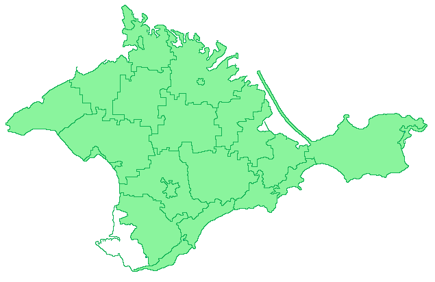
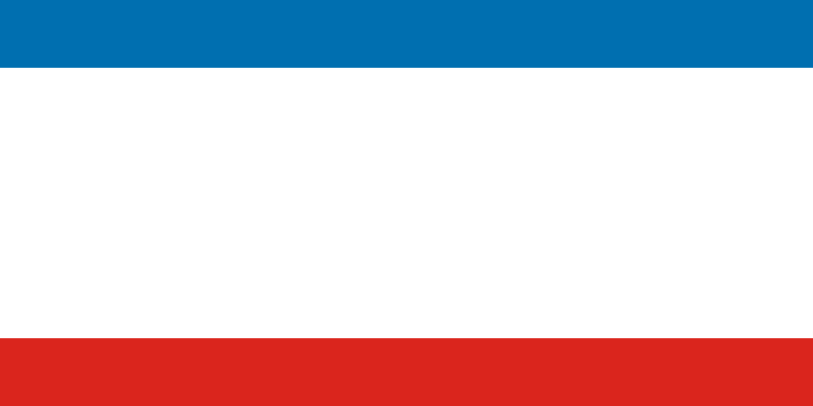
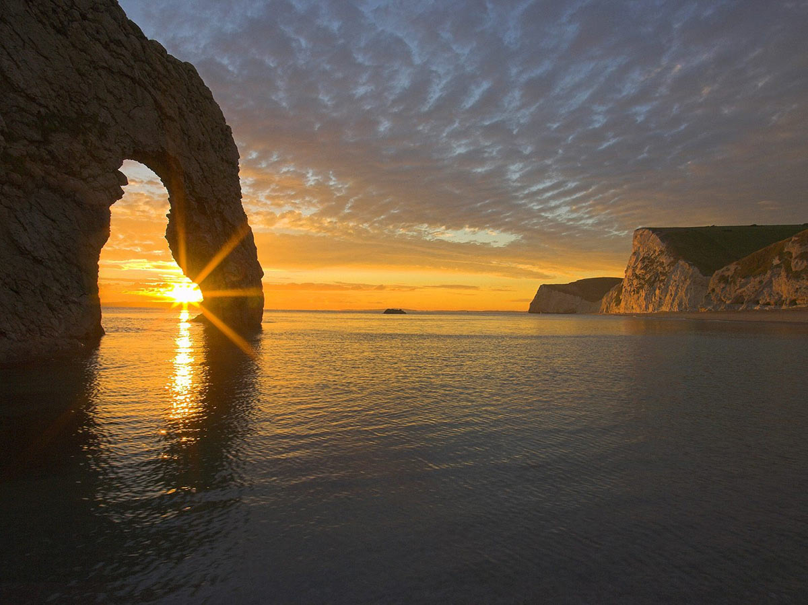
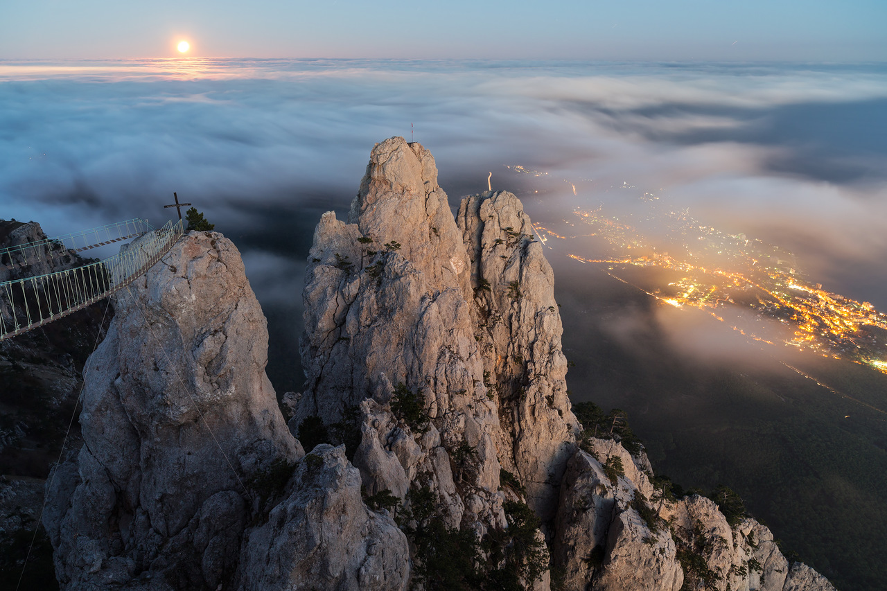
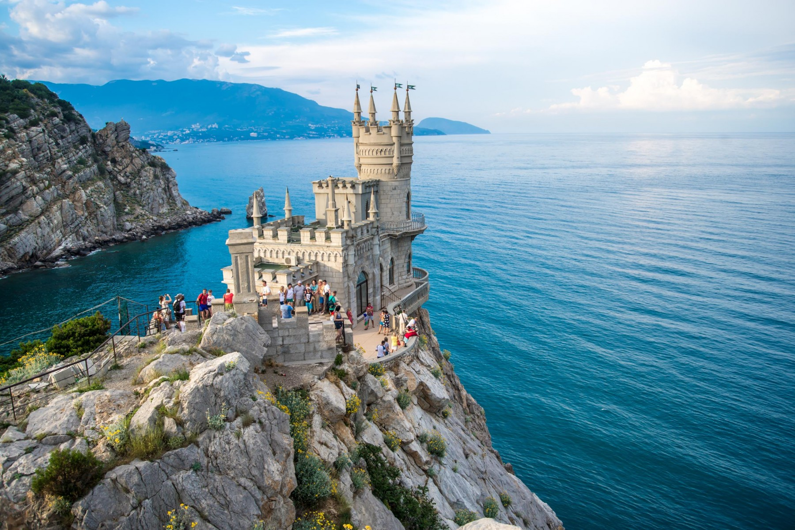
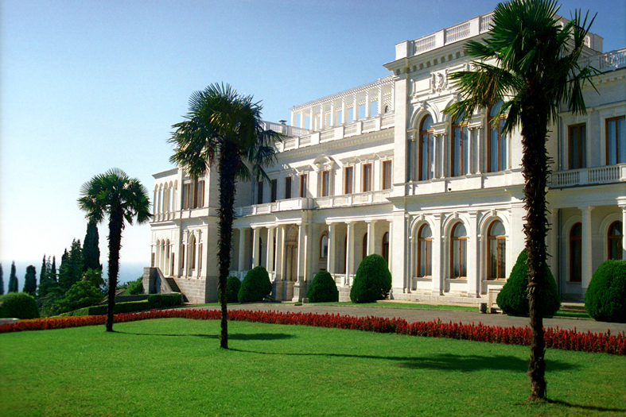
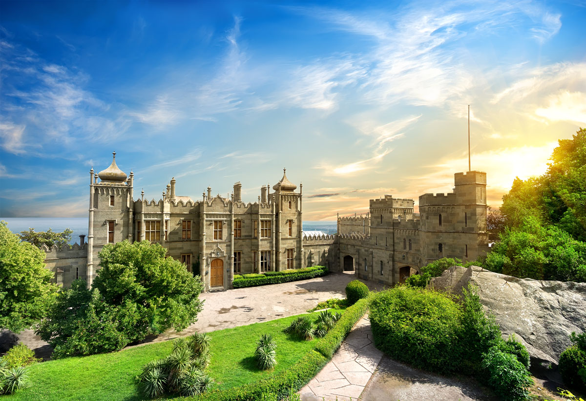

Автономна Республіка Крим
(
крим.
Qirim Muhtar Cumhuriyeti
) - адміністративна одиниця на
півдні України
,
розташована на кримському півострові. Українською владою,
OOH
,
ЄС
визнається як територія, тимчасово
окупована
Російською Федерацією.
|  |
|
|---|---|
| Прапор АР Крим | Герб АР Крим |
Гімн АР Крим
Пейзажі




